Menu
Groei en ontwikkeling1e Toetsmoment 2020‑2021
Examen inleveren
Weet je zeker dat je het examen afsluit?
Examen resetten
Al je antwoorden worden gewist en je begint opnieuw. Weet je het zeker?
Jouw resultaten
Groei en ontwikkeling · 1e Toetsmoment 2020‑2021
—
/ 67
0
Goed
0
Fout
0
Niet beantwoord
Vraag 1
Een bacterie, een prokaryoot, heeft verschillende celonderdelen. Waar wordt onderdeel E in de afbeelding voor gebruikt in de diagnostiek?
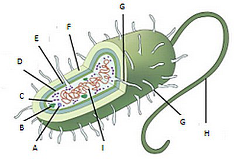
Vraag 2
Na een kampeervakantie aan een bergmeer in Italië hebben drie leden van een gezin vettige en stinkende diarree en bovenbuikspijn. De levenscyclus van deze gastro-intestinale infectie veroorzakende parasiet bestaat uit twee stadia: cyste en trofozoïet. Om welke parasiet gaat het?
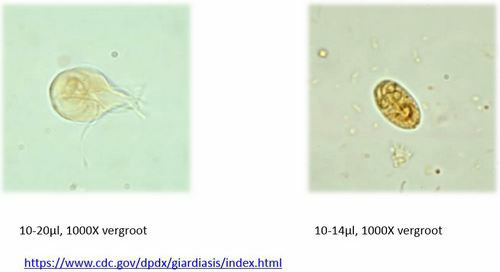
Vraag 3
In het menselijk lichaam zijn op verschillende plaatsen fysiologische biofilms te vinden, bijvoorbeeld tandplaque. Een biofilm bestaat naast eiwitten en polysacchariden uit veel soorten bacteriën. Welke bacteriesoort speelt vooral een rol bij sepsis vanuit een biofilm op voor het lichaam vreemd materiaal zoals een centraalveneuze lijn?
Vraag 4
Welke soort bacteriën zit bij alle mensen op de huid?
Vraag 5
Een 6-jarig meisje zag deze structuren bij haar vulva. Ze had daar jeuk en sliep slecht. Van welke infectie is hier sprake?
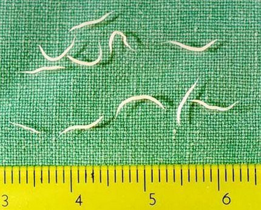
Vraag 6
In een groot kinderdagverblijf is er een epidemie met Streptococcus pneumoniae, resulterend in verschillende gevallen van otitis media en zelfs meningitis. Sommige kinderen hebben geen symptomen maar zijn wel keeldrager van deze bacterie. Er is een nieuwe antigeentest (AgTest) ontwikkeld die binnen 15 minuten in de urine aantoont of er een pneumokokkeninfectie speelt. De resultaten van deze antigeentest worden vergeleken met kweekresultaten. De uitslagen hiervan zijn als volgt: AgTest positief, kweek positief: 25 kinderen AgTest positief, kweek negatief: 5 kinderen AgTest negatief, kweek positief: 5 kinderen AgTest negatief, kweek negatief: 95 kinderen. Wat is de sensitiviteit van deze nieuwe test, als je de kweek beschouwt als gouden standaard? Rond af op een heel getal.
Een 3-maanden oud kind, prematuur in november geboren na 30 weken zwangerschap ligt op de neonatale intensive care unit vanwege onrijpheid van de longen. De eerste gevallen van respiratoir syncytieel virus (RSV) in de stad zijn inmiddels gediagnosticeerd. Welke profylaxe om een RSV-infectie te voorkomen is aangewezen?
Vraag 8
Dit is een schematische tekening van een bacterie. Wat wordt aangeduid met de letter F?
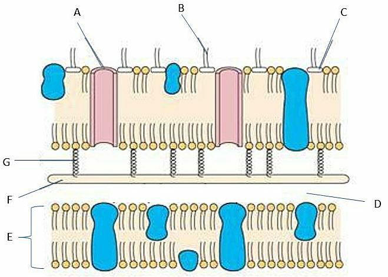
Vraag 9
Virussen gebruiken receptoren om de gastheercel binnen te dringen. Welke receptor wordt door het SARS-CoV-2 virus, de verwekker van COVID-19, gebruikt om dit te doen?
Vraag 10
Welke drie infectieziekten zijn zoönosen?
Meerdere antwoorden mogelijk.
Vraag 11
Een 18-jarige jongeman voelt zich niet lekker. Tijdens het kijken naar een serie krijgt hij scherpe pijn vastzittend aan de ademhaling, hoge koorts en koude rillingen. Zijn vader brengt hem naar de huisartsenpost. De dienstdoende arts ziet een zieke man met verminderde percussie rechtsonder en een temperatuur van 40°C. Er wordt sputum afgenomen en direct een Grampreparaat gemaakt. Welke verwekker is het meest waarschijnlijk de oorzaak van zijn pneumonie?
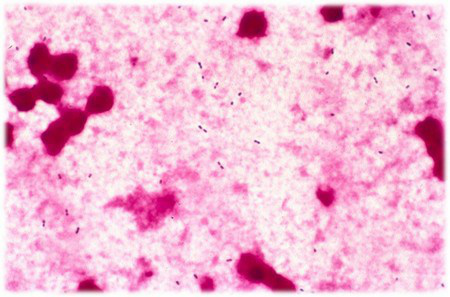
Vraag 12
Kies de juiste alternatieven.
De -test maakt onderscheid tussen streptokokken en stafylokokken en de -test maakt onderscheid tussen Staphylococcus epidermidis en Staphylococcus aureus.
Vraag 13
Een kinderarts ziet op zijn poli een meisje dat thuis meerdere keren buiten bewustzijn is geraakt. De ouders vertellen dat dit gebeurde op momenten dat ze haar zin niet kreeg. Ze maken zich er grote zorgen over, vrezen dat er iets ernstigs aan de hand is en/of dat ze ontwikkelingsschade zal op lopen door de episoden van buiten bewustzijn raken. Welke leeftijd heeft dit meisje naar alle waarschijnlijkheid?
Vraag 14
Op het schoolplein mogen Anne en haar vriendin Sophie (beiden groep 2) niet meedoen met een gemeenschappelijk spel. Anne is hier erg boos over, Sophie is echter verdrietig. Anne vertelt 's avonds thuis aan mama over deze gebeurtenis en geeft aan dat zij vooral heel boos werd omdat ze niet begreep waarom zij werden uitgesloten, maar dat Sophie vooral verdrietig was omdat ze vaker niet mee mag doen op het schoolplein en Sophie denkt dat de andere kinderen haar niet leuk vinden. Waarover laat Anne merken aan moeder dat zij beschikt?
Vraag 15
Menno (13 jaar) wordt vanwege een oncologische aandoening behandeld met prednison en heeft als gevolg hiervan een opgeblazen gezicht gekregen. Op het schoolplein wordt hij door jongens uit een hogere klas uitgescholden voor 'dikzak' en als reactie hierop begint Menno deze jongens te schoppen en te slaan. Een docent komt tussen hen in en neemt Menno mee naar zijn mentor. Die belt zijn moeder. Wanneer moeder op school komt voor een gesprek geeft ze onmiddellijk aan dat dit absoluut niet de bedoeling is, Menno zou toch beter moeten weten, dat hij nooit en te nimmer iemand mag slaan. Moeder neemt hem mee naar huis en neemt voor een week zijn i-phone af. Welke opvoedingsstijl hanteert de moeder van Menno?
Vraag 16
Mike (4 jaar) is met een zwangerschapsduur van 28 weken ter wereld gekomen. Een langdurige ziekenhuisopname van 3 maanden volgde met complicaties aan de luchtwegen en darmen. Op de follow-up polikliniek is op twee jarige leeftijd zijn ontwikkelingsniveau in kaart gebracht en dat liet zijn dat hij een laaggemiddelde cognitieve ontwikkeling laat zien. Mike heeft veel doktersbezoeken. Bij een controle in het ziekenhuis heeft moeder veel haast. De arts stelt voor dat de nieuwe co-assistent nog even het lichamelijk onderzoek bij Mike zal uit voeren terwijl moeder de kamer verlaat. Moeder legt aan Mike uit dat ze even weggaat en zo weer terug komt. Mike reageert meteen in paniek, klampt zich aan moeder vast en begint hard te huilen. De co-assistent pakt Mike van moeder over, moeder verlaat de kamer en de co-assistent probeert Mike te troosten. Dit lukt niet. Binnen 5 minuten is moeder weer terug in de kamer, treft haar zoon nog altijd overstuur aan en probeert hem te troosten. Mike reageert enerzijds door zich aan moeder vast te klampen, anderzijds is hij boos en duwt haar ook weer weg. Van welke hechtingstype is er bij Mike waarschijnlijk sprake?
Vraag 17
Tijdens de zwangerschap wordt het brein aangelegd, maar ook daarna vindt er nog een enorme hersenontwikkeling plaats, met name in de adolescentie. Welke drie processen spelen daarin een belangrijke rol?
Meerdere antwoorden mogelijk.
Vraag 18
In de adolescentie bestaat er een disbalans tussen de ontwikkeling van de subcorticale en prefrontale hersengebieden. Wat heeft dat voor gevolgen voor het gedrag van pubers?
Vraag 19
De identiteitsontwikkeling staat in de adolescentie centraal. Voor een positieve identiteitsontwikkeling zijn meerdere factoren van belang. Welke drie van onderstaande antwoorden horen daar voor de adolescent met name bij?
Meerdere antwoorden mogelijk.
Vraag 20
Kies de juiste alternatieven.
Bij meisjes ligt het begin van de puberteit(sontwikkeling) tussen 9 en 13 jaar. Bij relatief vroege rijping zijn zij vaak tevreden over hun uiterlijk. Relatief late rijping is psychologisch nadelig.
Vraag 21
In welke fase vinden onderstaande ontwikkelingen in de adolescentie met name plaats? Plaats de ontwikkeling bij de juiste fase.
bewustzijn seksuele identiteit
concreet denken
sociale autonomie
onderscheid wet versus moreel gedrag
Vraag 22
Welke uitspraak past het beste bij de afbeelding? (Bron: Lissauer Illustrated Textbook of Paediatrics)
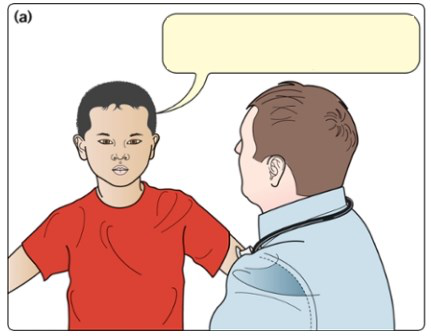
Vraag 23
Welke vier localisaties behoren tot de voorkeurslocaties van constitutioneel eczeem bij kinderen?
Meerdere antwoorden mogelijk.
Vraag 24
Voor welke twee stoffen treden in de Westerse wereld frequent allergieën op kinderleeftijd op?
Meerdere antwoorden mogelijk.
Vraag 25
Kies de juiste alternatieven.
Bij de reanimatie van een volwassene worden afwisselend 30 thoraxcompressies gegeven en 2 beademingen met het hoofd in 'sniffing' positie. Bij de reanimatie van een kind van 8 jaar worden afwisselend thoraxcompressies gegeven en beademingen met het hoofd in positie.
Vraag 26
Een 2-jarig kind presenteert zich op de eerste hulp met een ernstige pneumonie. De vitale gegevens zijn een hartslag van 170/minuut, een ademhaling van 60/minuut, een saturatie van 84% in kamerlucht en een rectale temperatuur van 38,9 graden Celcius. Bij lichamelijk onderzoek zie je een suf kind met een bleke huid, intrekkingen, blauwe lippen, een capillaire refill van 5 seconden. Bij auscultatie hoor je links-basaal verminderd ademgeruis en crepiteren. Welke twee elementen uit deze casus informeren je over de ademarbeid van deze patiënt?
Meerdere antwoorden mogelijk.
Vraag 27
Tijdens de specialistische reanimatie van een kind wordt het hartritme bepaald. Bij welke twee van de onderstaande ritmes dient géén schok te worden toegediend?
Meerdere antwoorden mogelijk.
Vraag 28
Een 15 jarig meisje wordt door een ambulance naar de eerste hulp gebracht in verband met een alcoholintoxicatie. Ze braakt, heeft een sterk verminderd bewustzijn en een temperatuur van 35,8 graden Celcius. Bij bloedonderzoek valt een verlaagd glucose van 3,0 mmol/l op. Wat zijn bij haar de twee meest relevante indicaties voor een opname in het ziekenhuis?
Meerdere antwoorden mogelijk.
Vraag 29
Harry van twee jaar oud heeft een nog onbekend medicijn uit het medicijnkastje ingenomen. Hoe hoog is het risico op een ernstige intoxicatie bij de volgende medicamenten?
Amoxicilline
anticonceptiepil
Ferrofumaraat (ijzerdrank)
morfine
Vitamine C
Vraag 30
Mike van 8 jaar oud sliep met zijn ouders in een caravan toen er brand uitbrak bij de gaskachel. Hij heeft een brandwond (2e graads) op zijn linker arm en zegt zich misselijk en benauwd te voelen. Hij moet hoesten, waarbij er roetdeeltjes in zijn sputum zitten. Welke twee gegevens uit de casus zijn het meest alarmerend?
Meerdere antwoorden mogelijk.
Vraag 31
Hieronder is een foto afgebeeld van een meisje van 3 maanden oud. Zij is uit de armen van moeder gevallen en vader heeft dit gezien. Het kind wordt nagekeken en bij topteenonderzoek ziet de arts de volgende huidafwijking, verder zijn er geen afwijkingen. (Bron: Medisch handboek Kindermishandeling, EM vd Putte et al) De bevindingen op de rug en de billen past het meest bij:
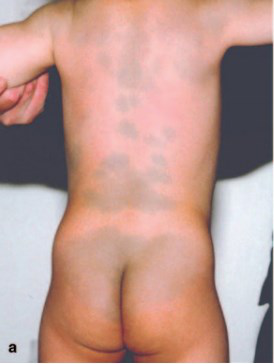
Vraag 32
U wordt benaderd als informant door Veilig Thuis met het verzoek om informatie te delen in verband met een onderzoek naar een vermoeden van kindermishandeling. U bent niet zelf de melder. Welke stelling is juist?
Vraag 33
Sleep de locaties van blauwe plekken naar de juiste plaats.
voorhoofd
ellebogen
buik
oren
Vraag 34
Welke twee stellingen zijn bij deze patiënt correct m.b.t. deze scan en het daarbij horende pathologisch preparaat? (Bron: Lissauer 326, 333; VUmc)
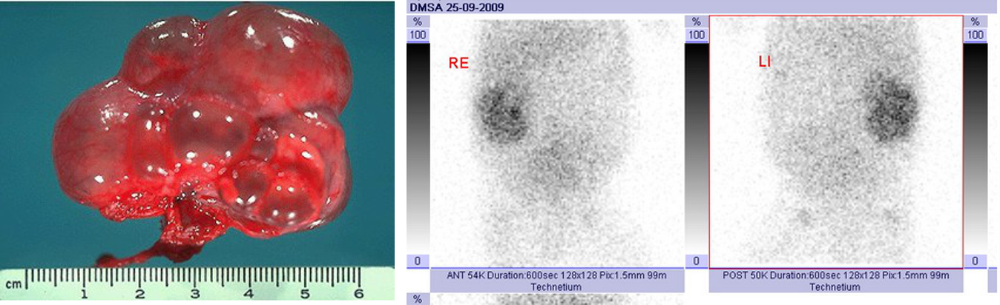
Meerdere antwoorden mogelijk.
Vraag 35
Tom, 6 weken oud, wordt behandeld onder verdenking van een urineweginfectie. Echter hij knapt na 48 uur ondanks behandeling met breedspectrum antibiotica niet op. Welk diagnostische stap dient nu met voorrang te worden genomen?
Vraag 36
Maud, 10 weken oud, wordt op de EHBO gepresenteerd ivm 39.2 graad koorts en spugen sinds twee dagen. De urine van Maud wordt d.m.v. dipsticks onderzocht. Er worden 3+ leucocyten aangetoond, de nitriettest is negatief. Een urinekweek wordt ingezet. Welke behandeling verdient de voorkeur?
Vraag 37
Een maaltijd bevat: eiwit: 31 gram koolhydraten: 64 gram, waarvan suikers 11 gram onverzadigde vetten: 8 gram verzadigde vetten: 20 gram Wat is de totale hoeveelheid energie die deze maaltijd bevat?
Hoessein is een jongetje van 3 jaar in een West-Afrikaans land waar een groot deel van de oogst door sprinkhanen is opgevreten. Hij komt op de medische post met onder meer een schilferige huid en een ontsteking in de mondhoeken. Bij welke vorm van ondervoeding passen deze verschijnselen?
Vraag 39
Welke twee van de volgende kenmerken passen bij de BMI (body mass index) bij kinderen?
Meerdere antwoorden mogelijk.
Vraag 40
Kies de juiste alternatieven.
Jerôme van 9 jaar komt bij de huisarts vanwege een acuut ontstane pijn in de rechter lies en in de onderbuik. Bij onderzoek is de rechter testikel gezwollen en pijnlijk bij palpatie. De linker testikel hangt lager, oogt normaal en is niet pijnlijk. Jerôme dient te worden doorverwezen naar de (kinder-)chirurg of –uroloog wegens verdenking op een .
Vraag 41
Dit is een foto van de genitalia van een jongetje van 5 jaar. (Bron: Lissauer Illustrated Textbook of Paediatrics 5e druk) Bij welke conditie past de witgekleurde massa op de eikel?
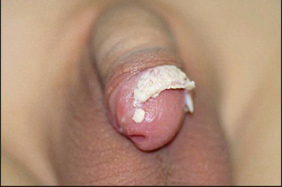
Vraag 42
Yasmina (4 maanden) is sinds gisteren kortademig. Ze heeft een droge hoest. De symptomen begonnen drie dagen geleden met een neusverkoudheid. De thorax is uitgezet en er zijn subcostale intrekkingen. De onderste leverrand is 3 cm onder de ribbenboog palpabel in de midclaviculairlijn, en is scherprandig. Verspreid over de longvelden zijn eindinspiratoir fijne crepitaties hoorbaar, en over diverse longvelden wordt expiratoir en ook wel inspiratoir piepen gehoord. Ze heeft een temperatuur van 38,2 graad Celsius. Voorheen heeft ze nooit luchtwegklachten gehad. Welke diagnose is bij Yasmina het meest waarschijnlijk?
Vraag 43
Op het spreekuur van de kinderarts verschijnt een kindje met roodheid en zwelling van het losmazige weefsel bij het oog (zie figuur). (Bron: Lissauer Illustrated Textbook of Paediatrics) Wat is de beste behandeling?
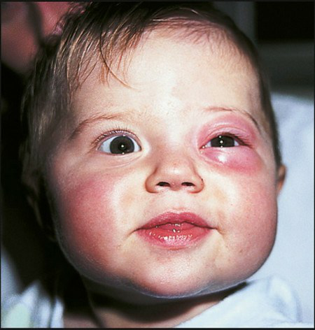
Vraag 44
Welke vier factoren zijn geassocieerd met “transient early wheezing”?
Meerdere antwoorden mogelijk.
Vraag 45
Joachim en Mahatma zijn allebei 8 maanden oud. Joachim woont met zijn niet-rokende ouders (beiden advocaat) in een ruim grachtenpand in Amsterdam. Overdag wordt hij verzorgd door een au pair. Mahatma woont met zijn beide ouders en zijn drie oudere broertjes in een oud boerderijtje waar zijn hippie-achtige ouders een alternatief kinderdagverblijf runnen met een aantal geiten en kippen. Zijn beide ouders roken. Welke invloed hebben de leefomstandigheden van Joachim en Mahatma op de kans dat zij een allergie ontwikkelen?
Vraag 46
Samuel is geboren met cystische fibrose (CF). Op welke vier problemen of verschijnselen heeft hij in de loop van zijn leven een verhoogde kans?
Meerdere antwoorden mogelijk.
Vraag 47
Henriëtte van twee maanden is opgenomen in het ziekenhuis en ligt aan de monitor. Daarop worden periodes van ongeveer 70 seconden geregistreerd waarbij de percutaan gemeten zuurstofsaturatie en de hartfrequentie sterk dalen en geen thoraxexcursies worden gemeten. Bij welke klinische conditie passen deze bevindingen het beste?
Vraag 48
Pseudokroep en epiglottitis zijn twee ziektebeelden die gepaard gaan met obstructie in de hogere luchtwegen. Welke vier van de onderstaande kenmerken passen beter bij epiglottitis dan bij pseudokroep?
Meerdere antwoorden mogelijk.
Vraag 49
Wat voor soort geneesmiddel is Salbutamol (Amerikaanse naam: albuterol)?
Vraag 50
Hoe wordt een reactie van het immuunsysteem genoemd op lichaamsvreemde stoffen die op zichzelf niet schadelijk hoeven te zijn?
Vraag 51
Yoshita is 8 dagen oud. In de eerste week ging alles prima met haar. Ze was actief en dronk goed. Af en toe huilde ze krachtig, maar ze was goed te troosten. Inmiddels is ze voorbij haar geboortegewicht. Sinds vandaag lijkt er echter wat veranderd: ze drinkt nauwelijks meer, voelt wat slap aan heeft een klagerig huiltje. De rectale temperatuur blijkt 35,3 graad Celsius. Welk aanvullend onderzoek dient met spoed te worden verricht?
Bloedkweek
Liquoronderzoek en -kweek
Urinekweek
Bloedonderzoek op infectieparameters zoals C-reactief proteïne (CRP)
Vraag 52
Bij welke aandoening bestaat er een verhoogde kans op het krijgen van een meningitis door pneumokokken?
Vraag 53
Kies de juiste alternatieven.
De ziekte van Perthes is een aandoening van en heeft een oorzaak.
Vraag 54
Welke initiële behandeling verdient bij de hier getoonde afwijking de voorkeur? (Bron afbeelding: www.mumc.nl)
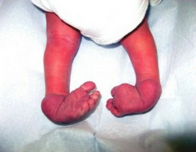
Vraag 55
Hatice is 16 maanden. Zij lijkt zich langzamer te ontwikkelen dan haar tweelingbroertje Mehmet. Hun moeder vraagt zich af of de ontwikkeling van Hatice nog normaal is. Mehmet kon los zitten op de leeftijd van 7 maanden, Hatice op de leeftijd van 11 maanden. Mehmet ging op de dag van zijn eerste verjaardag los lopen, Hatice doet dit sinds vorige week. Mehmet kent ongeveer 20 woordjes. Hatice kent 3 woordjes (papa, mama, Mehmet). De ontwikkeling van Hatice...
Vraag 56
Kies de juiste alternatieven.
Het Van Wiechen-onderzoek hanteert en als referentie gelden .
Vraag 57
Welke infectieziekte wordt veroorzaakt door een maagdarmvirus?
Vraag 58
Jessica heeft een spastische cerebrale parese. Binnen- en buitenshuis loopt ze met een rollator, voor langere afstanden maakt ze gebruik van een rolstoel om zich te verplaatsen. Volgens het grof motorisch functionerings classificatie systeem valt zij in klasse:
Vraag 59
Als consultatiebureauarts ziet u een meisje van 6 maanden oud. De ouders zijn bezorgd over de ontwikkeling en willen graag een doorverwijzing naar de kinderneuroloog. Op welke vier alarmsymptomen voor een afwijkende ontwikkeling moet u letten in de anamnese en bij het lichamelijk onderzoek?
Meerdere antwoorden mogelijk.
Vraag 60
Bij een patiënt met een cerebrale parese blijken de ingekleurde hersengebieden op de MRI scan te zijn beschadigd. (Bron afbeelding: www.kinderneurologie.eu) Welk subtype van cerebrale parese valt bij deze patiënt te verwachten?
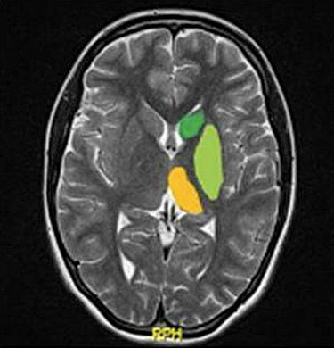
Vraag 61
Jacqueline is een week geleden geboren. Haar moeder is tijdens de zwangerschap gehervaccineerd tegen kinkhoest. Op welke vier leeftijden moet Jacqueline volgens het Rijksvaccinatieprogramma gevaccineerd worden tegen kinkhoest?
Meerdere antwoorden mogelijk.
Vraag 62
Op welke leeftijd bereikt een kind gewoonlijk de helft van de uiteindelijke volwassen lengte?
Vraag 63
Bij een meisje van 8 jaar begint zich schaamhaar te ontwikkelen. Ze heeft nog geen borstontwikkeling. Wat is de meest waarschijnlijke oorzaak dat zij nu al schaamhaarontwikkeling vertoont?
Vraag 64
Wat gaat op voor de oorzaak van pubertas precox bij jongens in vergelijking met meisjes?
Vraag 65
Welke chromosoomconfiguratie past bij het syndroom van Turner?
Vraag 66
Casus (2 vragen). De huisarts voert een lichamelijk onderzoek uit bij een 67-jarige mannelijke patiënt in verband met klachten van vermoeidheid. Bij auscultatie van het hart vindt de huisarts een diastolische souffle graad III/VI met het punctum maximum in de 2e intercostaalruimte links.
Bij welk klepgebrek past deze bevinding het meest?
Vraag 67
Vervolg van de casus (67-jarige man met klachten van vermoeidheid en een diastolische souffle in de 2e intercostaalruimte links).
Welk van onderstaande bevindingen is in deze casus het meest onderscheidend voor chronische veneuze insufficiëntie?